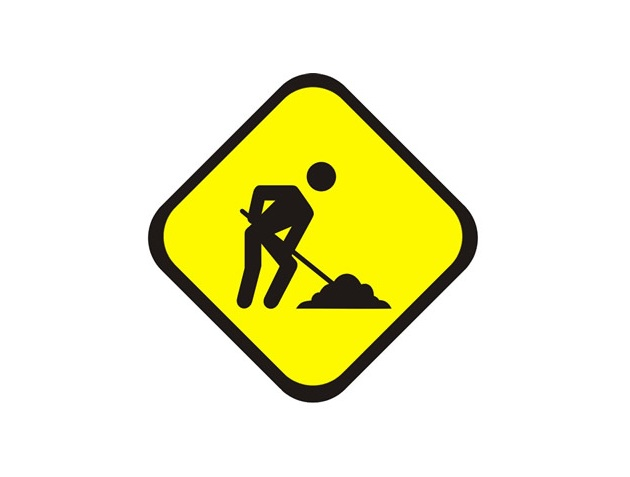
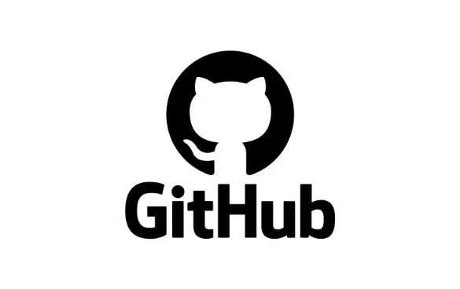
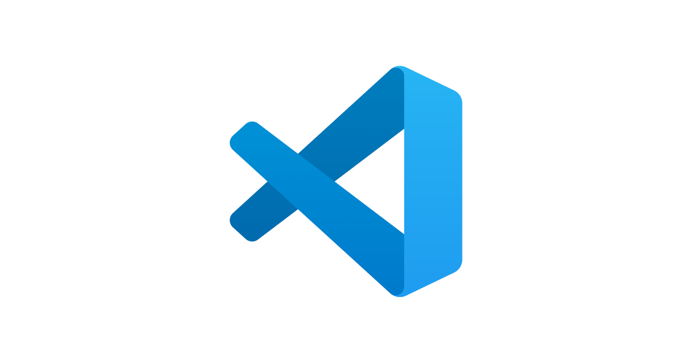
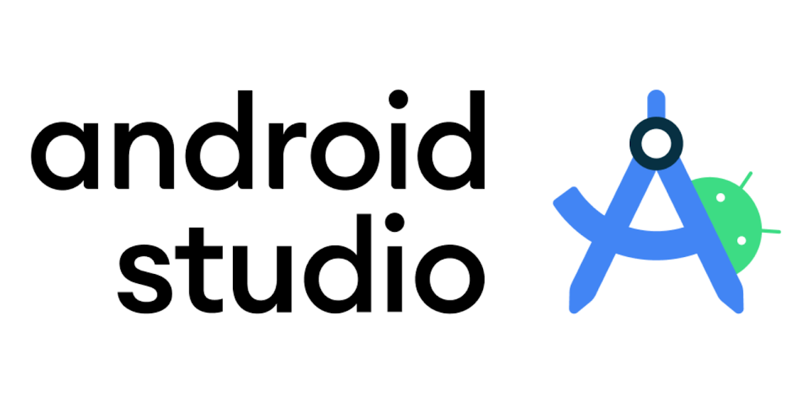

Proyecto en desarrollo
Próximamente
Espacio reservado para futuros proyectos personales y académicos. Aquí se mostrarán aplicaciones y desarrollos realizados durante mi formación y trayectoria profesional.

España
Desarrollador en formación especializado en Desarrollo de Aplicaciones Multiplataforma, con interés en programación, desarrollo web, bases de datos y creación de software. Me interesa construir aplicaciones estructuradas, mantener un código claro y seguir ampliando mis conocimientos en diferentes tecnologías y herramientas de desarrollo.
Formación en sistemas informáticos, montaje y mantenimiento de equipos, instalación y configuración de sistemas operativos, redes locales, servicios en red y soporte técnico.
Formación orientada al diseño gráfico, tratamiento y composición de imágenes, herramientas de diseño digital y fundamentos de gestión y organización empresarial.
Formación especializada en desarrollo de software multiplataforma, programación, bases de datos, acceso a datos, desarrollo de interfaces y sistemas informáticos. Actualmente en curso.

Gestión de repositorios, seguimiento de cambios, organización de proyectos y uso de Git para mantener un historial de desarrollo estructurado.

Uso de diferentes IDE y herramientas de desarrollo para programar, depurar, organizar proyectos y trabajar con distintas tecnologías.

Desarrollo de aplicaciones mediante programación orientada a objetos, estructuras de datos y buenas prácticas para crear software mantenible y organizado.